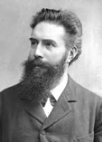

Medical radiology has now existed for over a century. It all started in 1895 when Wilhelm Rönt  gen discovered x-rays. On 28 December 1895 his manuscript “On a New Kind of Ray” was submitted to the Würzburg Physical Medical Institute.
The essential features of x-rays were described and the new discovery aroused tremendous interest. Because the apparatus was readily available in most physics departments his results could easily be repeated. The apparatus gradually improved and hospitals started to acquire the equipment.
The radiographs were initially made onto glass photographic plates; George Eastman introduced film in 1918. In recent years there has been a digital revolution and radiographic images are now recorded and stored digitally.
Most of the early x-ray work was performed by doctors and the departments were often combined with
electro-therapeutic departments. However, from about 1903 lay x-ray operators were appointed as assistants.
Gradually more and more of these lay x-ray operators were appointed, training courses were set up and the Society of Radiographers was formed in 1920.
X-ray 1897: Hand radiograph of Sebastian Gilbert Scott (sometime BIR Hon Treasurer) 1895
X-rays were used for therapy from the earliest times. Skin lesions were easily treated and techniques evolved to treat deeper abnormalities.
These techniques depended on the development of more powerful apparatus, the use of multiple therapy beams and in the use of radium. The doctors in the x-ray department were involved in both therapy and diagnosis.
It was only from the 1930s that doctors were appointed with specific interests in diagnosis or therapy.
In the 1950s came the development of the image intensifier and x-ray television.
Many new techniques have been introduced in recent years and digital technology has transformed clinical practice beyond recognition. The principles
of CT scanning were invented by Godfrey Hounsfield and the first CT scan was announced in 1972. Work was progressing on magnetic resonance imaging in the 1970s and the first human image was obtained in Aberdeen in 1977.
Ultrasound started in the 1950s and gained popularity in the 1960s. “Real-time” ultrasound machines were introduced in the late 1970s. These new techniques have displaced many of the older x-ray techniques and this process will continue.
Modern diagnostic and therapeutic radiology are now central to patient care and the contributions of the pioneers should be celebrated!
By Dr Adrian Thomas, Honorary Librarian, The British Institute of Radiology